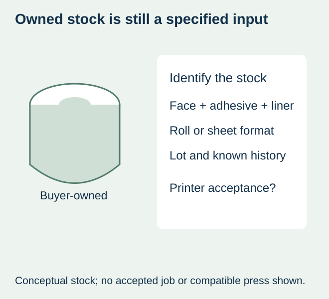
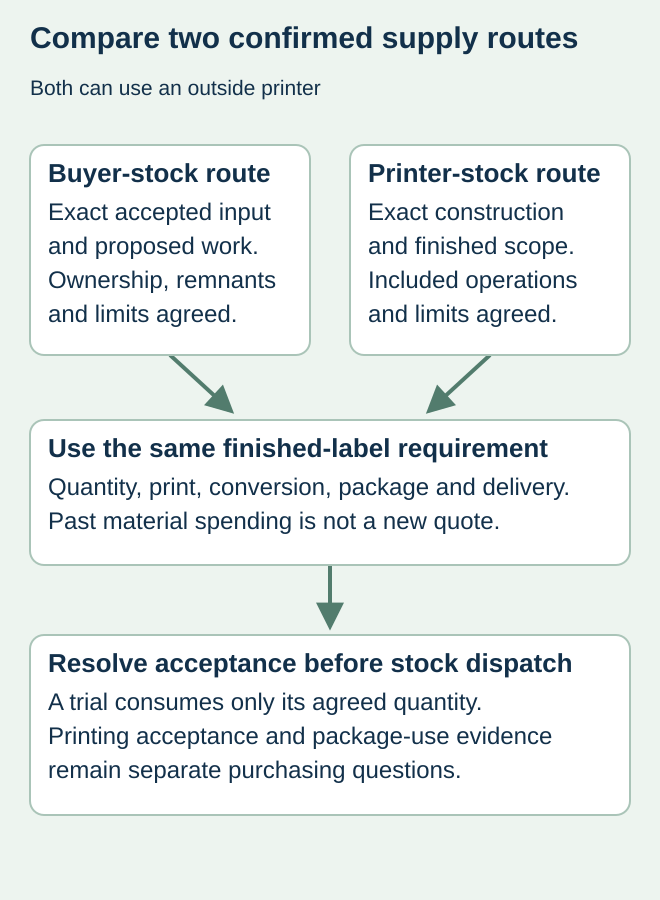

A food brand has blank labels left from an earlier plan and asks a custom printer to add its new artwork. Because the material is already paid for, the buyer expects the printed-label quotation to fall by the same amount. That assumes the stock can enter the proposed process and that the quoted work stays unchanged.
Obtain acceptance of the identified material and format before sending buyer-owned stock to a printer. Compare a confirmed proposal for printing on that stock with a complete printer-supplied label order. Do not deduct an estimated material saving from a standard quote or ship a parcel as if receiving it means the printer has accepted the job.


Establish what the buyer actually owns
An unused die-cut sheet, a wound roll of blank finished labels and a master roll of self-adhesive material are different inputs. Identify the face, print surface, adhesive, liner, supplier reference and physical format. Add the material lot, available quantity and known storage history. Where an identity or history is missing, say so.
The proposed printer needs to confirm whether it accepts that exact input under its actual process and commercial terms. A desktop-compatible sheet is not automatically compatible with a production press, and a master roll is not already a converted finished-label roll. Keep any required slitting, cutting, finishing or rewinding in the proposal rather than assuming it disappears because the material belongs to the buyer.
UPM’s digital label-material guidance distinguishes printing technologies and provides equipment- and construction-specific material selection. This supports identifying the actual material/process combination. It does not show that this site uses a particular press, accepts outside material or supplies UPM stock.
Ask for an answerable acceptance proposal
| Issue | Confirmation to obtain | Avoid assuming |
|---|---|---|
| Material identity | Exact accepted reference and relevant supplied documents | “White film” identifies the complete construction |
| Physical input | Accepted sheet/roll form and actual dimensions | Existing core and cut layout fit another process |
| Quantity and condition | Received count basis, condition and any needed evaluation stock | Every owned piece will become saleable output |
| Work scope | Printing, preparation, conversion and finish actually included | A normal finished-label quote minus material cost |
| Unused stock and waste | Ownership, reporting and agreed return or disposition | All remnants return automatically without charge |
| Delay or unsuitable stock | Agreed decision and commercial consequences | Receipt commits the printer to a launch deadline |


Compare two real offers, not a hypothetical deduction
Ask whether the printer offers a customer-stock route at all. If it does, request the actual price, accepted material, included operations and any evaluation conditions. In parallel, identify the complete construction and deliverable in the printer-supplied alternative. Compare quantities, work and delivery on the same basis.
The buyer’s past spending is already a historical amount. The next decision concerns the incremental work, dispatch, evaluation and other confirmed charges needed to obtain the required finished labels. Record any continuing value or permitted alternative use of the blank stock separately; no resale value or cost recovery is assumed here.
If a trial consumes some stock, agree its purpose and quantity first. Material used for preparation or destructive checks is not the same as delivered usable labels. A failed evaluation can still consume time and stock without establishing that either party supplied defective material. Commercial responsibility needs the parties’ actual agreement, not an editorial assignment of blame.
Keep material acceptance separate from package suitability
An accepted printing input still needs the relevant finished-label evidence for the actual jar, application and handling. A dry print trial does not approve refrigerated use. Likewise, prior package adhesion does not establish that another ink or finishing route is represented.
For a hypothetical jam project, the buyer may have correctly identified blank labels that worked in an earlier packing run. A new printer still has to assess whether it can produce the requested output from them. If it proposes a different construction, use the material-change record rather than treat the alternative as the same owned stock.
Choose a route before dispatching the material
Use the buyer-stock route only when its accepted scope and required evidence are sufficiently clear for the actual job. If identity, condition, compatibility or the proposed work remains unresolved, request clarification or compare a confirmed printer-supplied construction. Owning the stock does not make an unsupported route economical.
The in-house versus outsourced guide compares who performs printing. Here both alternatives can use an outside printer; the supply boundary for the material changes. This site makes no standing offer to print on customer-supplied stock, store it or guarantee its conversion yield. Those services and responsibilities require explicit project confirmation.
Discuss the unresolved label requirement
Send the exact stock reference, face/adhesive/liner information, lot and storage history, physical roll or sheet format, quantities and intended food package. Ask whether the printer accepts that specific material before arranging any dispatch. Review the food-label product scope and prepare a label specification inquiry. The contact page opens an email draft and lists email or WhatsApp for attachments. Supply, proof options, testing, pricing and timing require project confirmation.